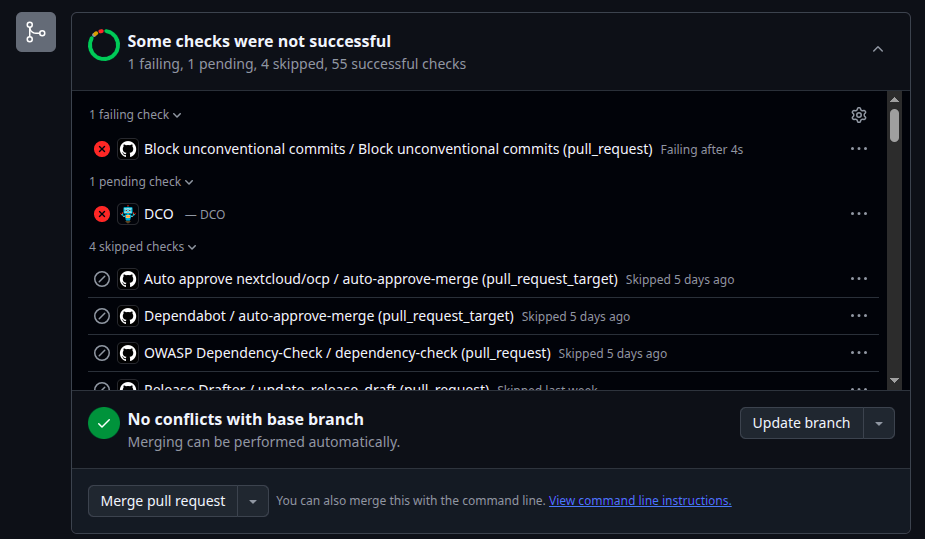

Commits
Conventional commits
If you want to know more about Convertional Commits, you can read the documentation.
About the title of the commit, you should use the following format:
feat:my pull request <
About the description of the commit, you should use the following format:
Pull Request Description Related Issue Issue Number: #830 Pull Request Type - Feature Pull request checklist - [X] Add button "Open file" - [x] Add action to the button <
DCO
If you want to know more about DCO(Developer Certidicate of Origin), you can read the documentation.
Possible error envolve DCO

If you see the error message “
You must sign off your commits with a DCO signoff”, it means that you need to add a signoff to your commit message. You can do this by adding the following line to your commit message:There are two things to fix:
Sign off your commits (for DCO)
Use the [Conventional Commits](https://www.conventionalcommits.org) format for commit messages
Considering that you have 2 commits, at your terminal, run:
git rebase -i HEAD~2 <
The number 2 is about the quantity of commits ahead you will rebase.
You’ll see your commits listed like this:
pick e49199874 App metadata: Add donation link to appear on Nextcloud appstore < pick 1ed4561ad doc: add donation links to Github Sponsors and Stripe <
Change both lines from pick to edit:
edit e49199874 App metadata: Add donation link to appear on Nextcloud appstore < edit 1ed4561ad doc: add donation links to Github Sponsors and Stripe <
Save and close the editor.
Now you’ll be editing the first commit. Run:
git commit --amend --signoff <
When your editor opens, change the first line of the commit message from:
App metadata: Add donation link to appear on Nextcloud appstore <
to:
docs: add donation link to appear on Nextcloud appstore <
Save and close.
Then:
git rebase --continue <
Now you’re on the second commit. Run:
git commit --amend --signoff <
Change the first line from:
doc: add donation links to Github Sponsors and Stripe <
to:
docs: add donation links to GitHub Sponsors and Stripe <
Save and close.
Then:
git rebase --continue <
After this, you’ll complete the rebase flow and be able to push your branch. Since this changes past commits, you’ll need to push with force:
git push --force-with-lease origin patch-2 <